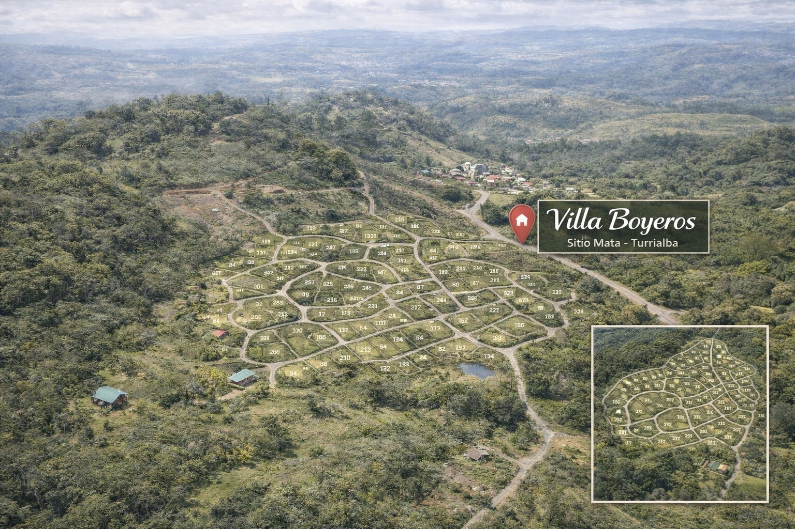

Comunidad rural, ubicada a 10 minutos del centro de Turrialba. Cuenta con lotes residenciales y quintas, ideales para desarrollar vivienda, micro-fincas o invertir, con vistas privilegiadas al valle, volcán y montañas.
Villa Boyeros ofrece una combinación atractiva de entorno rural, cercanía a Turrialba y versatilidad de uso, tanto para vivienda como para recreación, producción a pequeña escala o inversión.
A solo 10 minutos del centro de Turrialba, con acceso conveniente y ambiente de campo.
Espacios ideales para construir, desarrollar una micro-finca, tener una propiedad de descanso o invertir a futuro.
Entorno natural con panorámicas hacia el valle, el volcán y las montañas.
Conoce la distribución general y el entorno de Villa Boyeros.

Para consultar disponibilidad, precios, visitas o más detalles del proyecto, escríbenos directamente por WhatsApp.